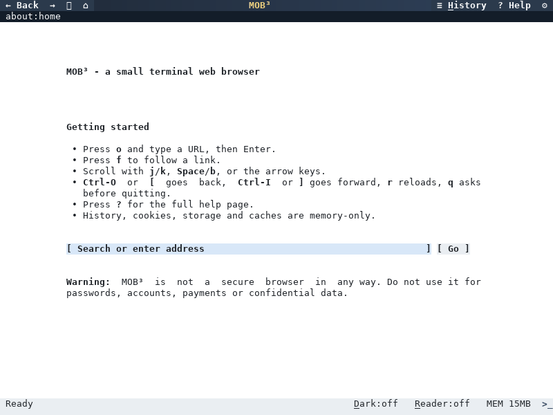
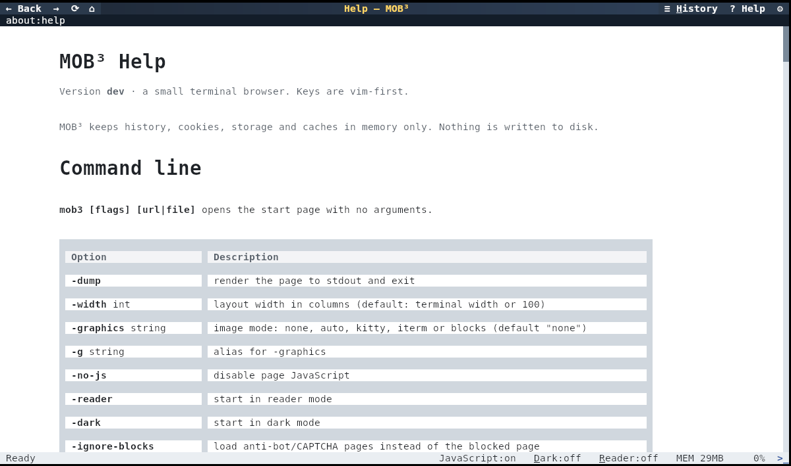
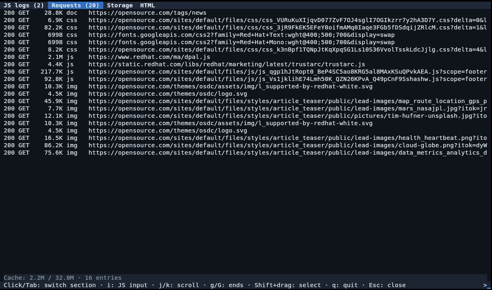
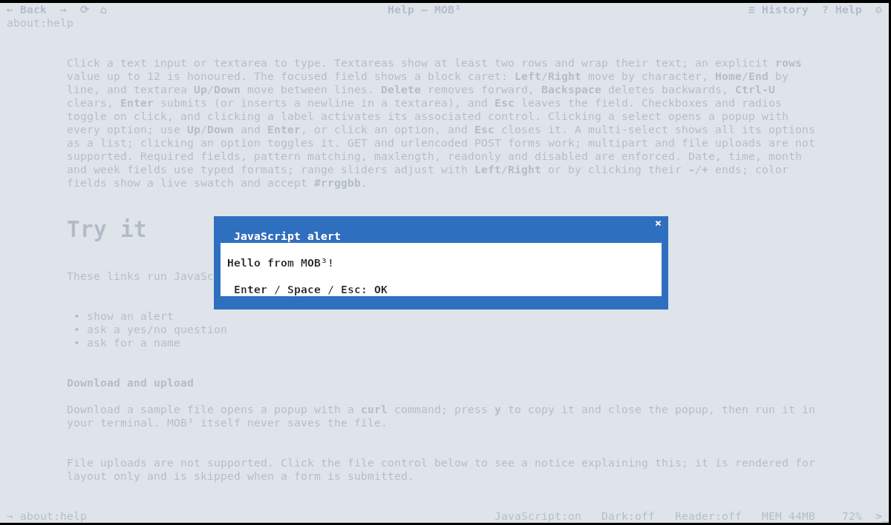
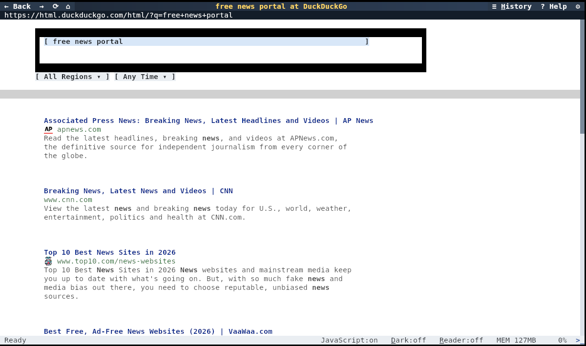
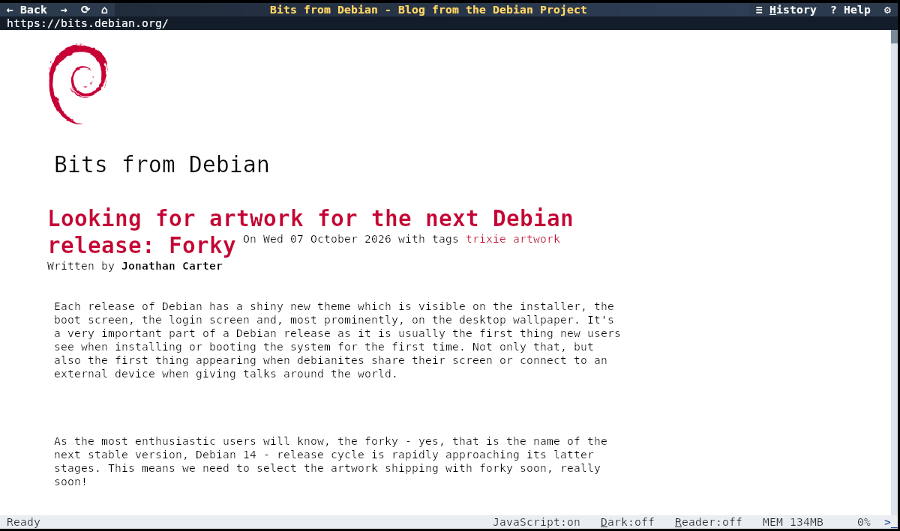
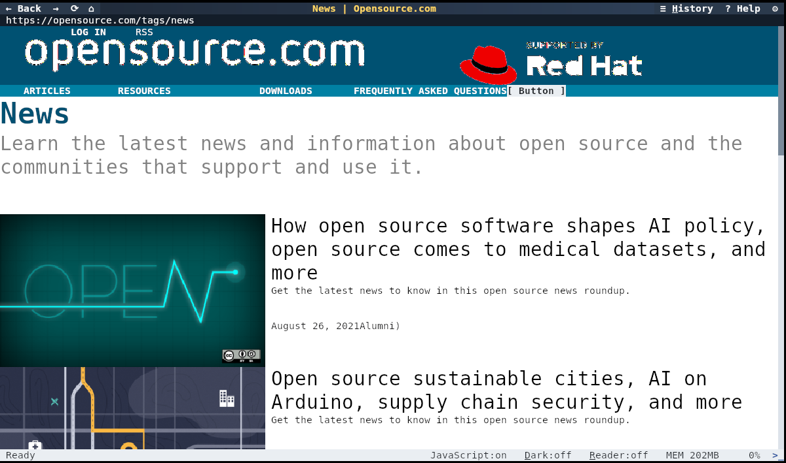
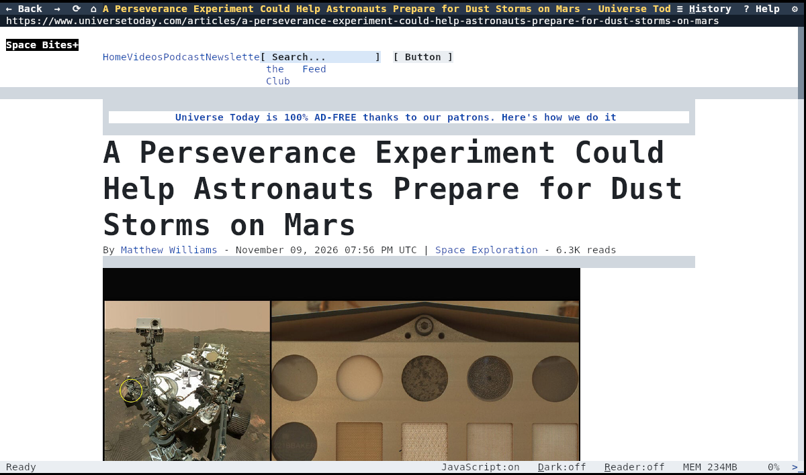
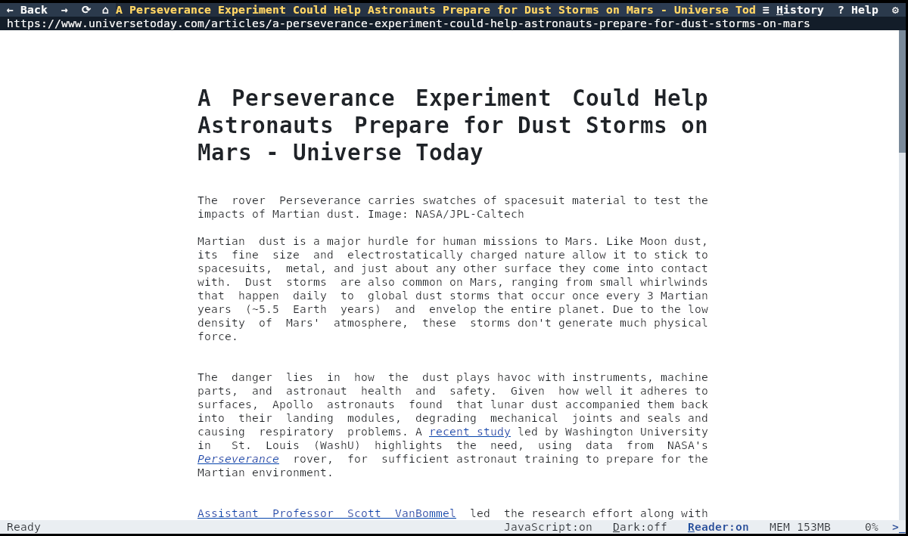
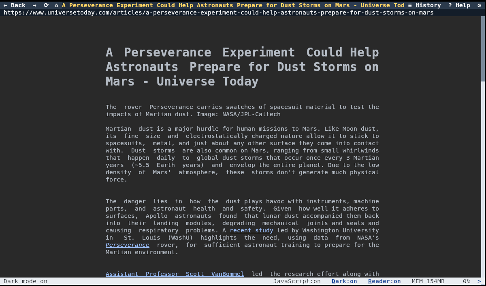

MOB³ is a small indie web browser for the terminal
MOB3 is a lightweight terminal web browser with a built-in HTML rendering engine, JavaScript runtime, ANSI renderer and inline image support. It brings Vim-style interaction, mouse controls and browser-like navigation together with headless MCP support for scripts and AI agents.
The design goal is most of the features people actually use, with a fraction of the CPU and memory a mainstream browser needs: a small static binary, fast startup and pages that stay lightweight.
Project page: mob3.net
GitHub: github.com/mob3net/mob3
Documentation
- Documentation index
- Use cases — developers, AI agents, terminal users and automation
- Architecture — process model, package boundaries and design tradeoffs
- Install — releases, Docker and source builds
- Command line — every flag, default and limit
- Keyboard and mouse
- Automation with MCP — headless control for scripts and AI tools
- Security and privacy, site support and development
Try it with Docker:
docker run --rm -it ghcr.io/mob3net/mob3 -graphics blocks
Download and install
Download the latest release from GitHub Releases.
Release archives cover Linux (386, amd64, armv6, armv7, arm64) and macOS (amd64, arm64). Choose the archive for your OS and architecture, for example mob3_vX.Y.Z_linux_amd64.tar.gz. Each archive contains the static mob3 binary.
Example:
tar -xzf mob3_vX.Y.Z_linux_amd64.tar.gz
sudo install -m 0755 mob3 /usr/local/bin/mob3
mob3 -version
Screenshots









Show your support
If MOB3 has been useful to you, please consider giving the project a star on GitHub. It helps others discover it and supports the continued development of the project.
What to expect
MOB3 is a content browser, not a full browser engine. It is happiest with text-focused pages and gets rough on modern JavaScript-heavy apps.
Works well
- Documentation, blogs, news articles, wikis, forums, changelogs and old or server-rendered HTML.
- Headings, paragraphs, lists, links, tables,
<pre>blocks, images and common presentational markup. - Text/search inputs, textareas, single-select option popups and multi-select list boxes, with a visible caret, click-to-place caret, arrow-key editing, date/time/month/week, range sliders, color swatches, HTML constraint checks, GET and urlencoded POST form submission. The start page has justified text and a full-width search/URL box that resolves input the same way as the
oprompt, including the-searchfallback. - Common CSS: selectors, cascade and inheritance, box model (including
box-sizingand min/max sizes), margins, borders, background colors andbackground-imagephotos on block containers, text styling, lists, tables, CSS custom properties, viewport-width@mediaqueries, viewport units,calc()andmin()/max()/clamp(), basic flex rows with alignment and ordering, left/right floats with line wrapping andclear, andoverflowclipping for bounded panels. - PNG/JPEG/GIF/WebP/BMP/SVG/data-URI images when enabled with
-graphics(auto,kitty,iterm, orblocksfor half-block art); pressito cycle full graphics, blocks and none. Images are off by default for speed. - Session-only memory cache for CSS, scripts, image responses and decoded images, budgeted at 3% of
-mem-limit(or 32 MiB when unlimited). In-process=per-tab,-mem-limitapplies per process, so each tab child, an MCP engine child and the parent each get their own limit. - Environment proxy support through
HTTP_PROXY,HTTPS_PROXYandNO_PROXY, including HTTP, HTTPS and SOCKS5 proxies; there is no proxy settings UI. - In-memory back/forward cache: Back and Forward restore the page, its DOM and its JavaScript state without a network reload and pause its timers while cached. The cache is memory-aware — a history budget of 12% of
-mem-limit(or 128 MB when unlimited) evicts the least recently used pages by estimated size, and pages heavier than half the budget are not cached at all — so heavy sites cannot pin memory. Nothing is written to disk. - Light JavaScript: DOM queries and mutation,
classList/style, click handlers, timers, alert/confirm/prompt and native<dialog>open/close, same-originfetch/XMLHttpRequestplus simple CORS cross-origin requests, and in-memory storage/cookies. Script errors turn the footerJavaScriptlabel into a redJavaScript:Error;Jor clicking that label toggles scripting for the session and reloads the page, while!opens the console. - JavaScript console (
!): tabbed view of logs, requests, cookies and in-memory storage, the raw page HTML, and a Tools tab for read-only page inspection (help,form,links,requests,logs,source,snapshot,history,clear); evaluate one-line expressions in the page's runtime, with Up/Down or Ctrl-P/Ctrl-N history and results appended to the log.clear/clsempties either the JS log or the Tools scrollback, and the×in the console menu closes it. - Reader mode (
R, the footerReader:on/Reader:offlabel, or-readerat launch): extracts the main article into a narrow, chrome-free text column, stays enabled across navigation, and restores the normal page and scroll position when toggled off. - Built-in text-only PDF viewer: a PDF response is extracted page by page into one continuous document with column alignment, a centered reading column and a
Page ncaption above an underscore rule after each page; every page is padded to the same height so it scrolls like a book, and two-column pages are read column by column. PDF headings keep their spacing, and runs clearly larger than the body text use the same 32px headline path (two rows, scaled glyphs in kitty) as HTML headings. Find, selection,-dumpand-pngwork as on any page. The footer showsPage n/Nwith a clickable(S -> Download name)hint, andSopens the same curl popup.-pngexports one page (-pdf-page=Norallfor the whole document). Figures, images and annotations are not rendered;-no-pdfrestores the download prompt. - Dark mode (
D, the footerDark:on/Dark:offlabel, or-darkat launch): asks sites for their dark styles withprefers-color-scheme: dark. Pages that already render a dark background keep their own palette; otherwise backgrounds, text, links and borders are remapped to a dark palette. Images keep their original colors. - Page zoom (
+/-,0resets, or-zoom Nat launch): changes how many CSS pixels a cell represents, so fixed-pixel layout, spacing, images and kitty scaled large headings grow or shrink while body text keeps its size and line height. The CSS viewport follows the ratio, so responsive pages reflow. Zoom is session-only; the URL row shows the current level, and clicking that badge opens a window for choosing a preset with the mouse. - Vimium-style link hints (
f): highlights letters from each visible link or form control, then follows the link or activates the control when you type them.Fopens the chosen link in a background tab.ppreviews the destination, with Enter to follow andyto copy. Middle-clicking a link opens it in the background; right-clicking a link opens the same preview.Escor scrolling dismisses the hints. - Headless MCP automation (
-mcp): navigate, snapshot page text, list links and forms, click links or elements by text, fill forms, select options, submit, wait for async content, type, press keys, scroll, evaluate JavaScript, inspect history and read request logs, JS errors or page source.snapshotreturns page text independently of the interaction viewport — whole pages up to one response andoffset/rowswindows with aNextoffset for longer ones — so reading does not require scrolling.linksandformpage through large listings the same way. Screen captures are terminal-cell rasters; sessions are memory-only. The automation engine runs in a child process by default, so an engine crash does not take down the MCP server; later tool calls report the crash until the client restarts the server, and-process=singlekeeps the engine in the server process. - Browser-style toolbar with back/forward/reload/home, history/help buttons, a config gear and a tab strip that stays visible even with one tab.
- Tabs:
t/Ctrl-Topens a tab,W/Ctrl-Wcloses it, and a middle click on a tab closes it too. Closing a tab returns to the tab you used before it, while closing the last tab quits without the quit confirmation.Ctrl-N/Ctrl-P(orAlt-Right/Alt-Left,l/h) move next/previous without wrapping, and1-9/Alt-1-Alt-9select one. New tabs fromt/Ctrl-T, the+button and help are added at the end with an empty URL prompt when no target is given; the config gear opens a settings window over the current page instead of a new tab, and a link opened in a background tab (For middle click) is inserted directly after the current tab. Each tab keeps its own history, scroll, focus and overlays. Cookies follow normal domain rules across tabs,localStorageis shared by tabs on the same origin, andsessionStorageis per tab and origin. Graphics mode and zoom are browser-wide; theMEMreadout is the active engine process, which in per-tab mode is the active tab's child rather than the browser total. Background tabs keep loading and update their title and history but do not draw; their timers and image work are paused so an idle tab stays at zero CPU. Closing a tab cancels its in-flight script requests first, so a page stuck in JavaScript cannot block the close. A crashed tab stays markedCrashed, shows the reason in a scrollable content view, and can be closed without stopping the others; a tab whose engine stops responding is force-stopped and kept the same way. By default each tab's engine runs in its own child process, which also contains fatal runtime errors such as a stack overflow to that tab;-process=singlekeeps all tabs in one process (see architecture). - Keyboard and mouse navigation, including the kitty keyboard protocol in kitty, WezTerm, Ghostty and foot, a standard Tab order through links and form controls (Space/Enter activate, arrows or h/j/k/l change selects, radios and ranges),
/orCtrl-Fincremental find (including multi-word phrases) with highlighted matches (also in the console HTML tab), a draggable page scrollbar, a browser-wide history overlay (H or Ctrl-H; selecting an entry opens it in the current tab, while back/forward stay per tab and keep each page's last scroll position), scrolling, focus, link hover targets and CSS/JS hover menus, text selection (ycopies selected text, or the current URL when nothing is selected), fixed-overlay hiding (X), and a!JavaScript console.
Rough edges
- Modern JavaScript apps (SPAs, dashboards, Google search and similar) may show a partial page, a blank page or their no-JavaScript fallback. ES module scripts run, including relative imports, dynamic
import(),import.meta.urland bare specifiers resolved by the page's import map, and custom elements are constructed, but the rest of the JavaScript API surface is still a small subset. - Reader mode is heuristic: it can pick too little or too much content on unusual layouts, shows a snapshot rather than live updates, and removes images, forms and other interactive controls. Dark mode keeps images in their original colors and approximates some author color schemes.
- Anti-bot and firewall checks (Cloudflare, CAPTCHA, DataDome/PerimeterX, Imperva/Sucuri, access-denied pages) are generally not usable. A “Site blocked” page is shown instead.
- No video/audio playback, WebGL, WebAssembly, workers, WebSockets, iframes, Shadow DOM, custom element lifecycle callbacks, real observers or full History API.
- Basic CSS grid rows and horizontal grid-item alignment are supported, along with
position:relative,position:absoluteandposition:fixed, left/right floats with line wrapping andclear, andoverflowclipping for bounded boxes.position:stickywithbottom/left/right, CSS variables, animations, transitions, non-text generated content, background gradients and repeating background tiles are unsupported or approximated. - SVG support is partial: paths, shapes, gradients, transforms,
clipPath,fill-ruleand<use>of paths/groups work, but text inside SVG,<use>resolving to<symbol>sprites, filters, masks, CSS-in-SVG and animation are not rendered. Animated WebP is not supported. - Oversized images are capped at 40% of the viewport width and 16 rows, preserving their aspect ratio. Images with a definite CSS box (both width and height) use
object-fit/object-positionand fill or crop into that box instead of hitting those caps. - No automatic downloads; a download link opens a popup with a copyable
curlcommand without fetching it, except a.pdfdownload, which opens in the text viewer (-no-pdfrestores the popup for PDFs), and multipart/file uploads are not implemented (clicking a file input shows an unsupported notice). Selected page text copies withythrough OSC 52 (terminal support required), and the URL can be selected with the terminal. The console request list is shared across tabs, so a new document load in one tab clears it for the others; JavaScript logs, history and scroll stay per tab. - Very large pages, stylesheets and images are capped to keep memory and CPU bounded. Style and layout also run under a time budget, so a pathological page is shown partially with a truncation notice instead of freezing the browser. Pages whose timers update the DOM are redrawn a few times per second rather than continuously, and an idle page with no pending timers does not repaint at all.
Using command line options
Start reading Wikipedia in dark mode:
mob3 -dark -reader 'https://en.wikipedia.org/wiki/Vim_(text_editor)'
See all available options with -h flag. Every flag and default is listed in the command-line reference.
Capture a PNG screenshot:
mob3 -png -width 120 bbc.com/news > bbc.png
Automation (MCP)
mob3 -mcp runs a headless browser as a Model Context Protocol server over stdin/stdout. It accepts an optional starting URL and fixed -width:
{
"mcpServers": {
"mob3": {
"command": "/path/to/mob3",
"args": ["-mcp", "-width", "100", "about:home"]
}
}
}
Tools: navigate, snapshot, links, form, fill, select, toggle, submit, click (link number, CSS selector or x/y), type, press, wait, wait_for, scroll, back, forward, reload, evaluate, history, screenshot, requests, logs and source. snapshot returns the page text, paged with offset/rows for long pages; links and form page through the full link and control lists with selectors. screenshot returns a PNG of the terminal-cell raster, not a browser pixel capture.
The server is local and unauthenticated, sessions and storage are memory-only, and nothing is written to disk. Do not expose it as a network service. See the full MCP reference for the protocol, snapshot format, tool details, and setup instructions for OpenCode, Claude Code, Cursor and Claude Desktop.
Development
Build from source and start browsing:
make
./bin/mob3 https://example.com
Requires Go 1.27 or newer. Interactive mode runs on Linux and macOS terminals; Windows users can run it under WSL. When stdin/stdout are not a terminal, MOB3 automatically falls back to dump mode.
Press ? inside the app for keys, mouse and forms help. Run mob3 -h for the full list of command-line flags. mob3 -version prints the embedded version.
Contributing
Contributions are welcome. Every pull request must include the broad license-grant CLA statement described in CONTRIBUTING.md; it keeps MOB3 available under both AGPL-3.0-only and a commercial license. The PR workflow checks the statement. The CI workflow runs formatting, vet and tests, and a separate nightly workflow runs a vulnerability scan.
License
MOB3 is licensed under the GNU Affero General Public License, version 3 only (AGPL-3.0-only). Copyright (c) 2026 Milos Stojanovic. See LICENSE.
A separate commercial license is available on request for use without the AGPL's source-disclosure requirements.
MOB3 is provided “as is”, without warranty of any kind. See the warning at the top: this is not a security boundary.
Third-party module licenses are listed in THIRD_PARTY_NOTICES.